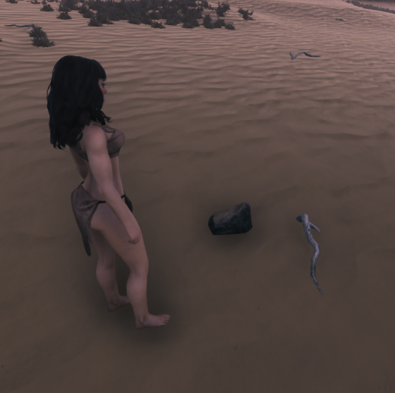
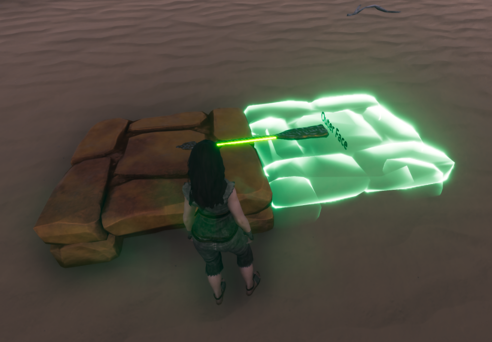
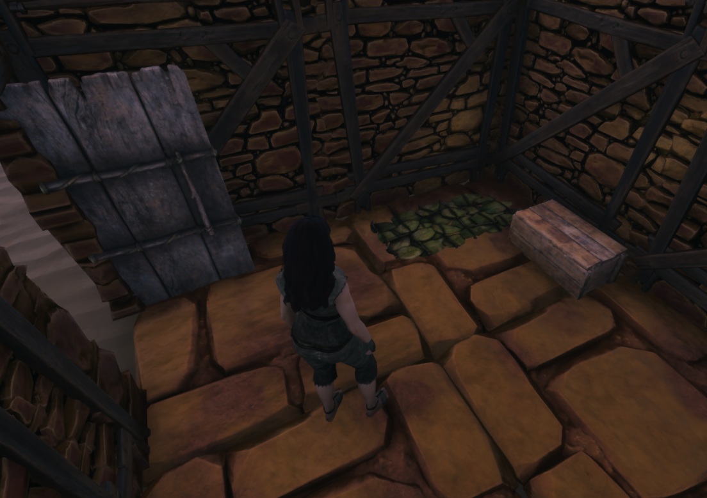
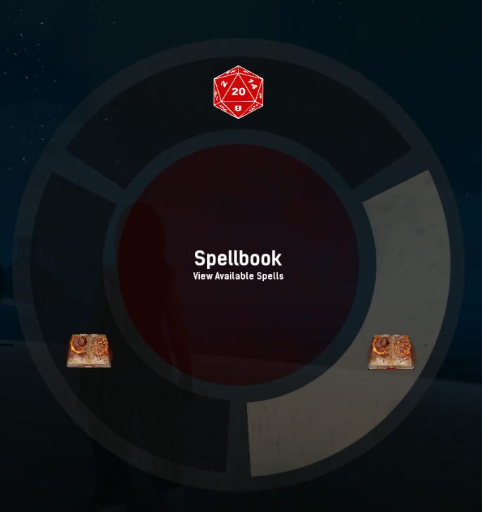
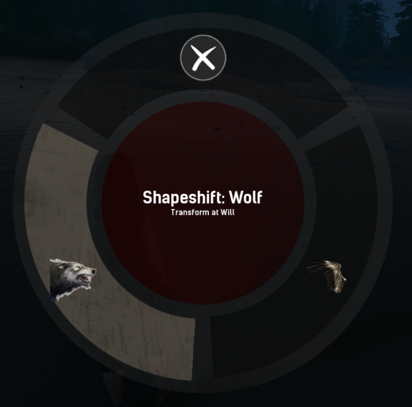
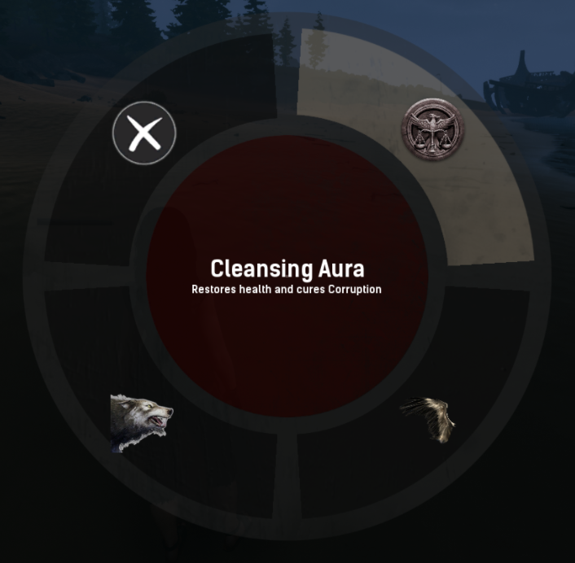

Conan Exiles spawns you in naked and alone. In this game, survival comes first. You will need to search for food, water, and shelter. The difficulty of the game depends on what mode you choose to play. There are a few modes to choose from: Local, PvE, PVE-C, PvP
In Local play you can freely explore the land by yourself or with your friends taking your time at your own pace. Beginning by yourself or with a few friends is a great way to learn the game. Exploring and combat also feels so much more immersive as you will only be interacting with the NPCs and land.
PvE allows you to enter into the world on an online server to begin playing cooperatively with people all around the world. Servers are divided into regions but if you want to play with a friend on the other side of the world, you can do so! Join this server if you wish to play alongside many allies to take on the foes in the land.
PvE-C is a mode that allows people to build without fear of being raided, but still lets people fight each other during certain hours of the day. This mode is good for those who are beginning out in survival games and still want the full experience that Conan Exiles has to offer.
PvP is the most hardcore mode. Clans will form, bases will be destroyed, and items will be lost. This mode is not for the faint of heart and requires people to know how to fight each other, build, and bring down bosses.
Once you have chosen a server type, you can choose between an Official or a Private server. Official servers are hosted by Funcom and do not have moderators. While the cheat engine Conan Exiles uses has been effective for many things, it is not foolproof. For those who have had bad experiences with cheaters in the past, may look to Private servers as many of them have active admins who can kick and ban people who cheat or break rules.
To begin your journey in Conan Exiles, you must first create your character and make it past the beach or desert, depending on what map you choose. Exiled Lands is the original map which is likely the optimal place to learn the beginnings of the game. Here you start in the desert, away from water and materials. Following the road you start on will bring you to a lush place to begin your adventures. Start by collecting fiber, branches, and rocks. You will now be able to craft items by pressing I which will open your inventory and show you your craftables.
As you level you gain attribute points and feat points that you can freely spend to focus into specific areas. Attribute points directly affect your fighting and survival, whereas feat points give you different craftables to choose from. You can open your attribute panel by pressing G. Strength gives you melee damage, Agility increases your armor, Vitality increases your health, Accuracy increases ranged damage, Grit increases your stamina, Encumbrance increases your weight capacity, and Survival increases the amount you can harvest from resources. You can open your feat panel by pressing O and you will need to learn the basic recipes to learn the more advanced ones as you level.
You should begin building a house after learning the mason feat and crafting the starting building pieces by pressing I again. After you craft a bedroll, you can freely explore, storing your items in boxes within your house and if you happen to die, you will respawn at your bedroll.
Once you have settled into Conan Exiles, you can begin to branch out to modded Private servers that add a completely new layer to the game. A great modded server is Shattered Realms RP. We use Indrid’s Custom Classes and Races that adds immersive fantasy elements like spellcasting, shapeshifting, new combat mechanics, and specific classes.
We will go into the beginnings of the server and how to work the new additions the mods have to offer the game. When making a character, you no longer just choose from being a human male or female, take a look at our races for more information. Each race has a specific height range they should be, a lot of inspiration has come from Dungeons & Dragons (D&D) as races in that fantasy world have powers and character flaws.
Once you pick a race, you must learn what classes they have available to them. This way you can accurately choose a race and class that suits the way you play. This game mode plays a lot like D&D as each player takes time to roleplay with each other and develop a story. We even use dice rolls when interacting with each other very much like a tabletop game. However, when conflict arises, both players need to opt into dice combat or it will default to the base game mechanical combat.
The most interesting part about this server is definitely the custom races and classes, so we will delve into how you can use it.
Shift Z to toggle for applicable races
Spellcasting is done via holding E, which will bring up a wheel that shows your RP Profile, and your spellbook. Simply open your spellbook, and drag any spell you have onto your hotbar. After that, all you have to do is press whichever key your spell is on to activate it. For example if you put your fireball on 3, pressing three will cause your character to cast a fireball. Spells have cast times, cooldowns, and mana costs. Now you can truly feel like a mage, no more needing to take out your spear and hope you can out melee the other player, as you now have real magic at your disposal, that is very viable yet also balanced in fights.
Shapeshifting is done via your F key. This will bring up a wheel with all your shapeshifts available to your class or race. No longer do you need to carry around a bunch of transformations in your inventory and swap out your head pieces for them. You now seamlessly swap between various shapeshifts and your humanoid form. Each shapeshift comes with all its attacks and animations, which all can be for use in PvP. Shapeshifts with flight will be able to use that same wheel via F to go into flight mode, then back to walking, all seamlessly as well. Flight also takes stamina now, and the faster you go, the faster you will drain your stamina. We hope this will help balance flight, so that fliers do not feel overpowered and have a scouting advantage. Do not drink potions while you are shapeshifted or flying, however, or it will cause your character to not be able to do actions. You will need to pull off your bracelet in this instance.
Healers can finally have a real impact on combat and are no longer a form of flavor magic or after the fight. Play as a healer, casting heals on your allies, auras that provide buffs like a passive heal or an aura that grants your allies a passive stam regen. Aura of decay will do a small damage tick and sap a small amount of attributes from nearby enemies. Support characters, healers now have a place in PVP in a very impactful way, and will change how teamfighting is done in Conan.
Many Private servers are too afraid to implement drastic changes to PVP, and stray too far from a vanilla experience, or perhaps take too far and make things a complete mess. We wanted to make everything fun, and give people the ability to feel like the class or role they were playing and bridge the gap between gameplay and roleplay. You will not be running around with 1000 health and maxing out every stat, but you will feel more powerful through perks and bonuses granted to different classes, encouraging different play styles and builds. This was developed and tested by various people who have spent thousands of hours on Conan. Fun first, balance next. Nobody likes to be one shot or cheesed, and we have spent days making sure that combat will be fresh, yet familiar, fun, and immersive.